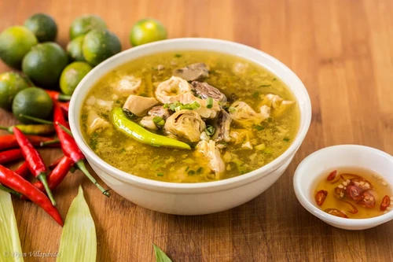

Beef Papaitan

Dish Recipes:
- 1 lb Beef heart (cubed)
- 1 lb Beef small intestine (cleaned)
- 1 lb Beef tripe (cleaned)
- 1/2 lb Beef liver (cubed)
- 1 lb Beef kidney (cubed)
- 22 Grams Knorr Sinigang sa Sampaloc Mix
- 1 Piece onion (chopped)
- 3 Thumbs ginger (minced)
- 5 Cloves garlic (crushed)
- 3 Piece long green pepper (sliced)
- 8 Cups water
- Beef bile to taste
- Salt and pepper to taste
- 3 Tablespoons cooking oil
Instructions:
- Wash beef tripe and small intestine. Boil with ginger and dried bay leaves for 45 minutes. Remove from the pot and let it cool down. Slice into bite-size pieces.
- Heat oil in a pan. Sauté onion, garlic, and ginger until onion softens.
- Add beef heart and kidney. Sauté until it turns light brown.
- Put the tripe and small intestines into the pot. Cook for 2 minutes.
- Pour water into the pot. Let it boil. Adjust heat to low. Continue boiling until beef heart and kidney tenderise.
- Add beef liver and bile. Stir. Cook for 15 minutes in medium heat.
- Add Knorr Sinigang sa Sampaloc Recipe Mix.
- Put long green peppers into the pot and season with salt and ground black pepper. Stir. Cook for 2 minutes.
- Transfer to a serving bowl. Serve hot.